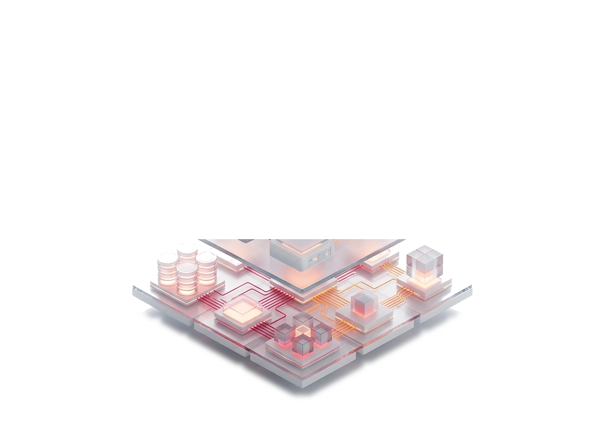
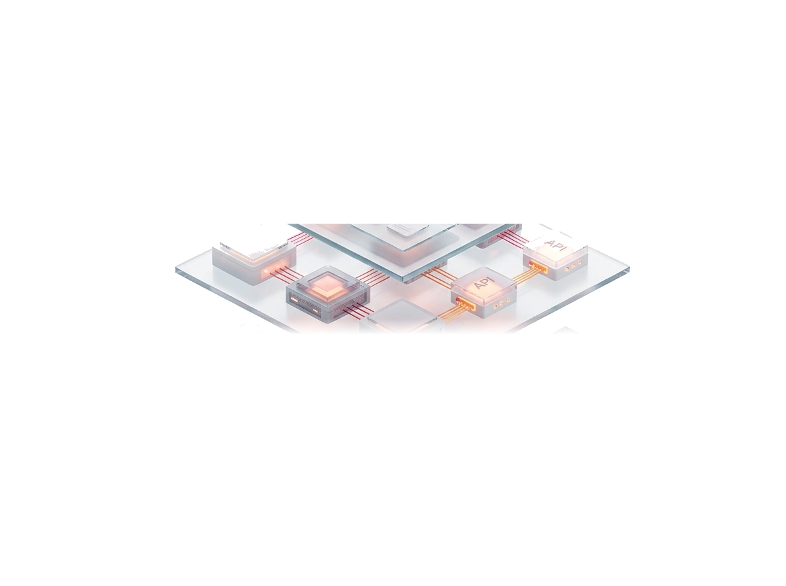
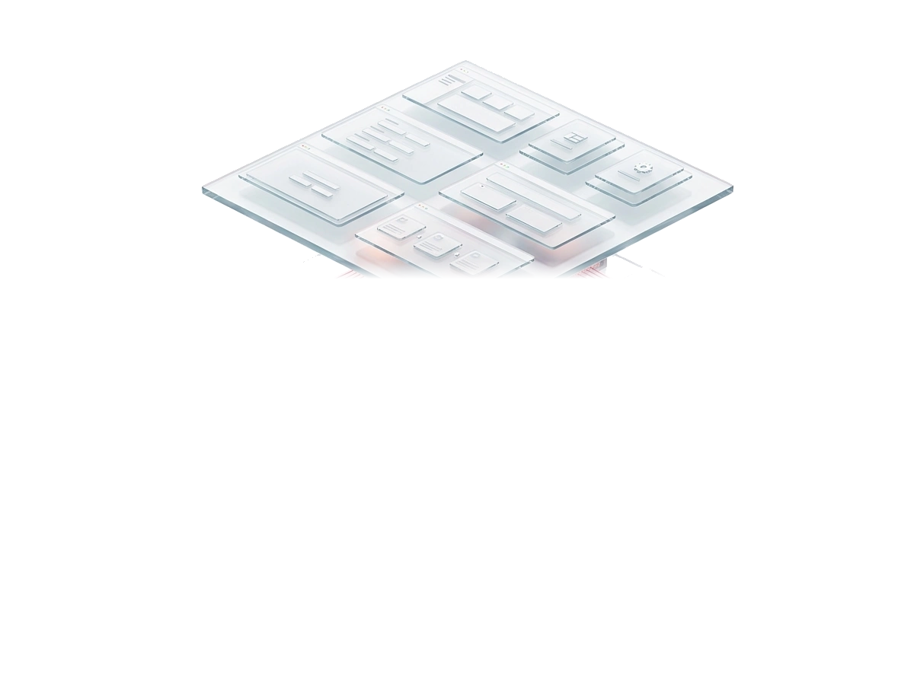

Hover a layer, or tab to it and press Enter to pin it. Move the pointer around to see the depth.
Diagram of a layered application architecture. Custom ERP applications sit on top, the service engine sits in the middle, and the enterprise data model forms the base.

Enterprise
Service
Custom ERPSet max-width on .arch3d to size it. See README.md.